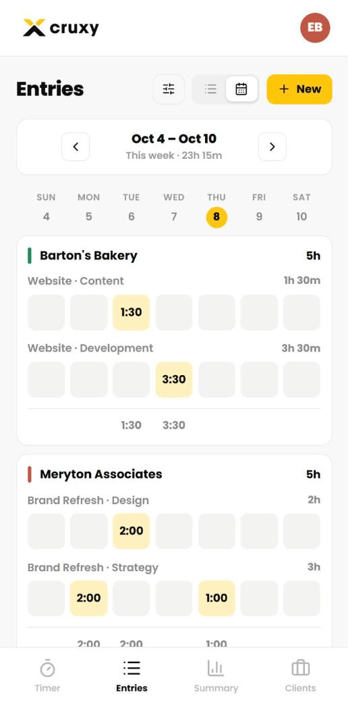
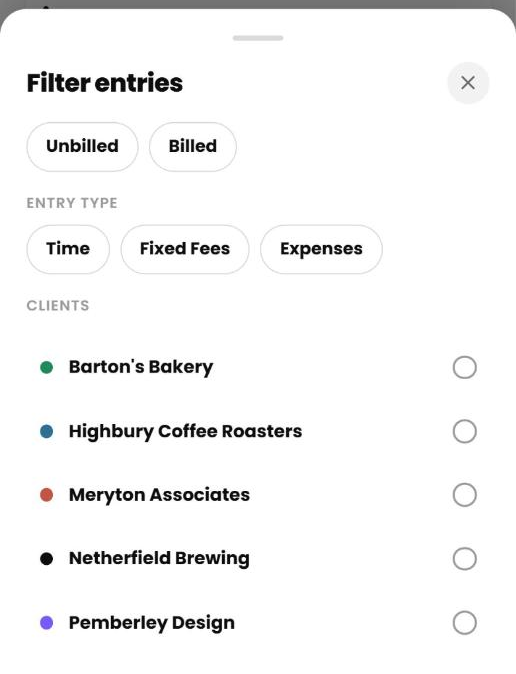
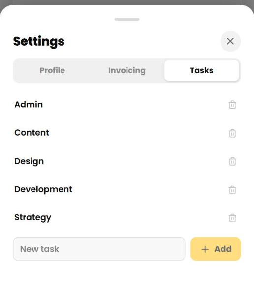

Cruxy / Support / Logging time
Logging time
Track time with the timer, add it by hand, or fill in a weekly timesheet.
Use the timer
- Tap Timer. Pick the client, project and task.
- Tap Start Timer.
- Tap Pause for a break and Resume to carry on.
- Tap Stop & Log to save the time as an entry.
Time is rounded to the nearest minute, with a minimum of 1 minute. Paused time isn't counted. The pickers are locked while the timer runs.
A running timer survives closing the app. If you start it on your phone, you can stop it from another device.

Add a time entry by hand
- Tap Entries, then New, then Time Entry.
- Choose the date, client, project and task.
- Enter the hours and minutes. Add a note if you like.
- Tap Add Entry.
The smallest entry is 1 minute.

Edit or delete an entry
Tap an entry in Entries (or in "Your entries today" on the Timer) to open it. Change what you need and tap Save Changes. To remove it, tap the trash icon and confirm. Deleting can't be undone.
A few things to know:
- Entries for an archived client are view only.
- If the time is already on an invoice, a note tells you which one. You can still edit or delete the entry, but the invoice does not change.
- Each entry keeps the rate it was logged at. If you change a client's rate later, old entries keep their original rate. Tap Use Current Rate on an entry to switch it.
Change the rate on a single entry
If the client has an hourly rate, the timer and the entry form show a rate row. Tap it to choose Default Rate, Custom Rate (an hourly rate you type in) or Non-Billable. Non-billable time never goes on an invoice.
Resume an earlier entry
In "Your entries today" on the Timer, tap Resume on an entry. The timer starts, and when you stop it the time is added to that entry. If another timer is running, it is logged first.
Use the weekly timesheet
On Entries, switch to Timesheet view to see the week as a grid, one card per client.
- Add Row picks a client, project and task to list.
- Copy Last Week's Rows brings over last week's rows (not the time) to save setup.
- Tap an empty cell and type a time such as
1h 30m,1:30,1.5or90m. The most you can add at once is 24 hours. - Tap a cell that already has time to edit it. A cell with several entries opens a list.
The week starts on the day you choose in Settings > Profile.

Filter your entries
On Entries, tap the filter button (sliders icon). You can show:
- Unbilled or Billed time
- Time, fixed fees or expenses
- One or more clients, including archived clients
The client filter also applies to the Summary tab.

Change the period you are viewing
The bar at the top of Entries and Summary switches between Week, Month and Custom. Use the arrows to step to the previous or next period, and the double arrow to jump back to today. Both tabs share the same period.
See your totals on Summary
The Summary tab shows hours, what you earned, and any fixed fees and expenses for the period, a chart by day or week, and breakdowns by client and by task. Amounts are shown per currency.

Export your time
On Summary, tap the download icon.
- Export CSV saves every entry in the period: date, client, project, task, hours, rate, earnings, currency, whether it's billable, invoice number and note.
- Export PDF saves a summary for the period with one section per client.
Free PDFs carry a small "Generated with Cruxy" credit. Pro PDFs don't.
Manage your tasks
Tasks (like Design or Meetings) are shared across all your clients. Open Settings > Tasks to add, rename or delete them.
- You can also add a task from the Timer's task list with + Add task.
- Renaming a task changes its name on every entry, including old ones.
- You can't delete a task that has entries. Rename it instead.

Work offline
New time entries are saved on your device first, then sent when you're online. A banner shows when entries are waiting to sync and confirms when everything is saved.
Editing or deleting entries, and anything in Clients, Settings and invoices, needs a connection. If an entry can't be saved (for example, its client was deleted), the banner offers Retry or Discard.